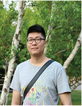
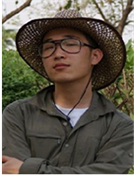

何军旭 集团开发管理部 敏捷设计师、PMP、CSM、Togaf9.0认证师
17年行业从业经验，具有ERP领域企业流程重组、业务需求分析、业务模型设计、系统实施推广、产品研发全周期管理等实践经验（包括产品开发和项目交付经验）；专注于研发流程管理和过程改进工作，负责集团研发管理制度与过程体系的建立及推广实施，正确理解和引导公司敏捷研发转型、推进敏捷教练工作。

刘鹏 集团开发管理部敏捷教练、过程管理、CSM
2012年加入用友，先后参加了互联网产品团队好会计，友云采，餐饮云的敏捷团队过程指导工作，有效的提升了团队的研发效率。曾在2016年参与过好会计和易代账代码合并重构的重大项目全过程，完成团队的平稳过渡和研发流程工具的有效融合。擅长通过度量数据分析团队状况，找到痛点并提出改进方案，帮助团队进入良性的开发周期，快速迭代交付。

赵永昕 持续交付专家
10年工程实际和过程改进经验，曾任职于全球最大的信息技术和业务解决方案公司，帮助提升项目工程质量和交付效率， 加入用友后主要负责集团代码管理策略制定和不断优化,从方案、技术、工具等层面逐步建立用友代码管理服务。